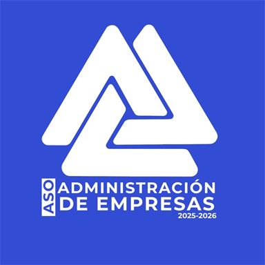

Asociación de estudiantes · ASO 2026–2027
Carrera oficial
Administración de Empresas — Universidad de Cuenca
Visión institucional al 2027
Gestión responsable, decisiones informadas y organizaciones sostenibles.
Principios para la Administración de Empresas
Competencias que desarrollarás
Gestión estratégica
Finanzas empresariales
Talento humano
Marketing y ventas
Producción y logística
Emprendimiento e innovación
Primeros pasos en el portal
- 01Explora el Repositorio Académico por ciclo y materia.
- 02Usa la Calculadora de Promedio en Herramientas.
- 03Inscríbete a una Tutoría si necesitas refuerzo.
- 04Revisa Oportunidades vigentes.
Nuevo ingreso
Kit de Nuevo Ingreso
Guía para estudiantes que empiezan la carrera: conoce la malla, organiza tus materias y usa los recursos académicos del portal.
Administración de Empresas
4 años · 8 ciclos · modalidad presencial
Formación para liderar emprendimientos y gestionar áreas de marketing, finanzas, talento humano y otras funciones organizacionales.
Conoce tu carrera
Información de Administración de Empresas
Formación para crear, dirigir y mejorar organizaciones en los sectores público y privado.
Accesos para estudiantes
Información
Horarios, calendario, solicitudes, malla curricular y trámites universitarios en un solo lugar.
Periodo Sep 25 – Feb 26
Trámites académicos
Grupo de WhatsApp
Malla 2025
Reglamentos
Prácticas y servicio comunitario
Titulación
Material de estudio
Repositorio Académico
Carpetas tipo Google Drive: ciclo, materia, categorías y recursos externos o locales.
Académico oficial
Malla y sílabos de Administración de Empresas
Encuentra materias por nombre o ciclo y abre el buscador oficial de sílabos de la Universidad de Cuenca.
Fuente oficial
Abrir buscador oficial
Información académica oficial
La carrera presencial otorga el título de Licenciado/a en Administración de Empresas y tiene una duración de 4 años (8 ciclos), según la oferta académica 2026 de UCuenca.
Apoyo académico
Tutorías Académicas
Encuentra acompañamiento para tus materias y reserva un espacio de estudio.
Primer ciclo
Clases Introductorias
Mini-cursos en video para reforzar las bases de las materias principales del primer ciclo.
Comunidad ASO
Tienda de Administración de Empresas
Las novedades de merchandising de la ASO 2026–2027 se publicarán aquí.
Herramientas
Herramientas Académicas
Selecciona una herramienta y trabaja en una sola pantalla, sin elementos repetidos ni secciones amontonadas.
Panel de trabajo
Promedio
Calculadora de promedio
Elige una ficha para abrir únicamente la herramienta que necesitas.
Calculadora de promedio
Ingresa cada nota sobre 100. La calculadora la convierte automáticamente a su valor real: Aprovechamiento 1 vale 25, Interciclo 20, Aprovechamiento 2 vale 25 y el examen final 30. La aprobación mínima es 60/100, pero en el examen final siempre se debe sacar mínimo 12/30.
Horario del ciclo actual
Arma tu horario por materia y grupo. Puedes imprimirlo o guardarlo como PDF.
Avance de Malla Curricular
Registra el estado de cada materia y visualiza tu progreso académico general.
Modo Focus Pomodoro
Temporizador de estudio para bloques de concentración. Ideal para repasar apuntes, resolver ejercicios o preparar exámenes.
Sesión de estudio25:00
0 sesiones completadas.
Banco de fórmulas
Consulta fórmulas, métodos y conceptos clave por materia de la malla. Se muestran de 4 en 4 para mantener la vista limpia.
Fuentes para empresas y mercados
Consulta fuentes oficiales sobre empresas, empleo, finanzas, comercio y entorno de mercado para tus trabajos y proyectos.
Filtrar por categoría
Recomendación: al usar datos en trabajos académicos, cita siempre la institución, el año y el enlace de consulta.
Asistente IA académico
Pregunta en lenguaje normal. El asistente responde primero con cálculos locales, fórmulas y la información guardada en el portal. Drive y el apoyo web funcionan como consulta adicional para no dejar la pantalla cargando demasiado.
📚 Busca en materiales y libros del portal
📄 Usa PDFs y documentos de Drive cuando Apps Script los encuentre
🧮 Resuelve cálculos, porcentajes y ecuaciones simples
🌐 Consulta resumen en línea si activas apoyo web
Base de libros y apuntes
Para que la IA responda con más contenido de tus libros, pega aquí extractos autorizados o resúmenes de capítulos. Los PDFs de Drive pueden aparecer por nombre y búsqueda, pero para respuestas largas conviene agregar texto.
Plan de estudio por materia
Elige materia y fecha de examen para generar una ruta breve de repaso.
Simulador de examen
Practica preguntas del banco según la materia seleccionada.
Preparación
Banco de Exámenes
Consulta referencias y enlaza nuevos exámenes desde el repositorio.
| Ciclo | Materia | Tipo | Periodo | Acción |
|---|
Este banco tiene fines académicos. No reemplaza la preparación completa.
Comunicación institucional
Consultas y preguntas
Escríbenos con confianza. Tu mensaje llega directamente al correo oficial de la ASO de Administración de Empresas y un representante te responderá personalmente.
Contacto académico
Docentes
Directorio editable desde el panel de administración.
Accesos directos
Recursos Rápidos
Atajos a servicios frecuentes del estudiante.
Bolsa y becas
Oportunidades
Pasantías, becas, cursos y convocatorias.
PERSONAS QUE TE REPRESENTAN · 2026–2027Tu voz.
Tu voz.
Nuestro compromiso.
Una directiva cercana para acompañar tus ideas y construir una mejor experiencia universitaria.
Mensaje enviado
Gracias
Tu información fue registrada. El equipo de ASO ADE puede consultarla en su panel privado.